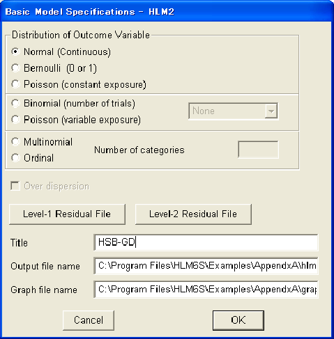
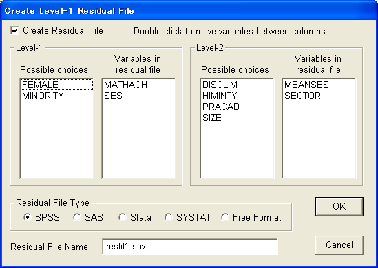
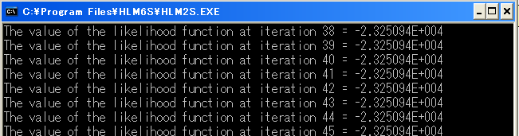

| 階層的線形モデルによるデータ分析の実際 — HLM6，SAS，Rを利用して — |
| 階層的線形モデルによるデータ分析の実際 — HLM6，SAS，Rを利用して — |
MDMファイルを作成したあとは，それを元に実際に分析したい統計モデルを指定することになる。1
HLM6では，式(1)から式(6)に従って変数を指定していけばモデルの指定ができる。 こうした直感的な操作を可能にする優れたGUI機能を持つことがHLM6の大きな特徴となっている。
式(1)のとおり，ここでは，生徒の数学の成績（MATHACH）をその生徒の家庭の社会経済的地位（SES）で説明するモデル式を立てる。
まず，[Level-1]ボタンをクリックして，レベル1の入力モードにする（通常はすでになっている）。 下にレベル1のモデル式に投入するための変数の一覧が表示されているので，そこから"MATHACH"をクリックし，"Outcome variable"を選択する。
これで，"MATHACH"が従属変数に入ったモデル式が表示される。
次に，"SES"をクリックして，"add variable group centered"を選択する。 これを選択した場合，説明変数の部分が太字（ボールド体）で表示される。 2
レベル1のモデル式に説明変数として"SES"が投入されたのが確認できる。 もし間違った変数を投入してしまった際は，その変数をもう一度選択し，"Delete variable from model"を選択すればよい。
[Level-2]をクリックして，レベル2のモデルの入力モードに切り替える。 切り替えた直後は，レベル1のモデル式の切片（）を説明するモデル式の部分が黄色くなっており，まずこの部分の入力を行う。 式(5)を参照し，先ほどと同じように"SECTOR"および"MEANSES"を説明変数として投入する（ここではともに"uncenterd"を選択。この場合説明変数は細字で表示される。）。
次に，を説明するモデル式のエリアをクリックして，ここを黄色くさせる。 式(6)を参照し，先ほどと同じように"SECTOR"および"MEANSES"を説明変数として投入する（ここではともに"uncenterd"を選択。）。
ここで，よく見るとレベル2の残差（）が灰色になっているのに気づく。 これは残差成分がモデル式に投入されていないことを示しているので，この部分をクリックして黒くする。これでがモデルに投入された。 3
Footnotes
| 階層的線形モデルによるデータ分析の実際 — HLM6，SAS，Rを利用して — |